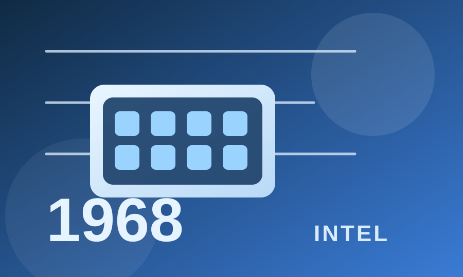
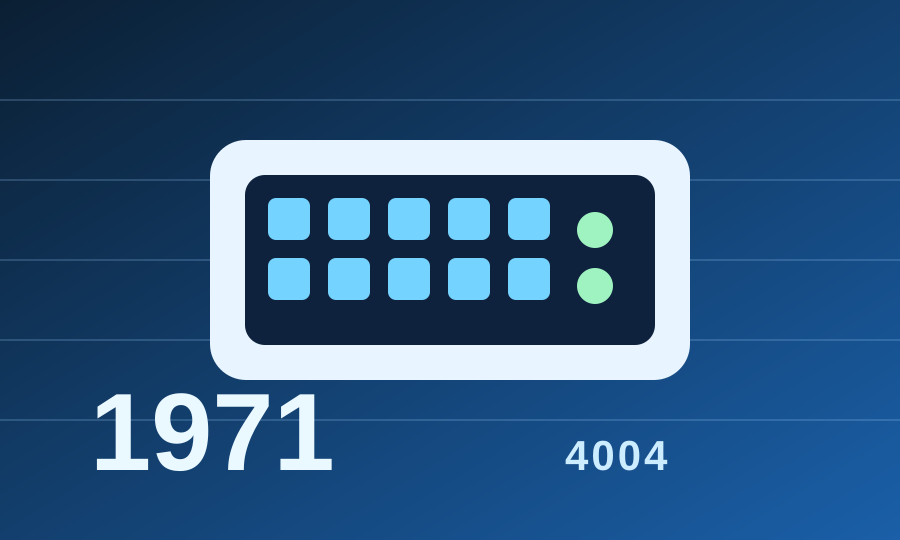
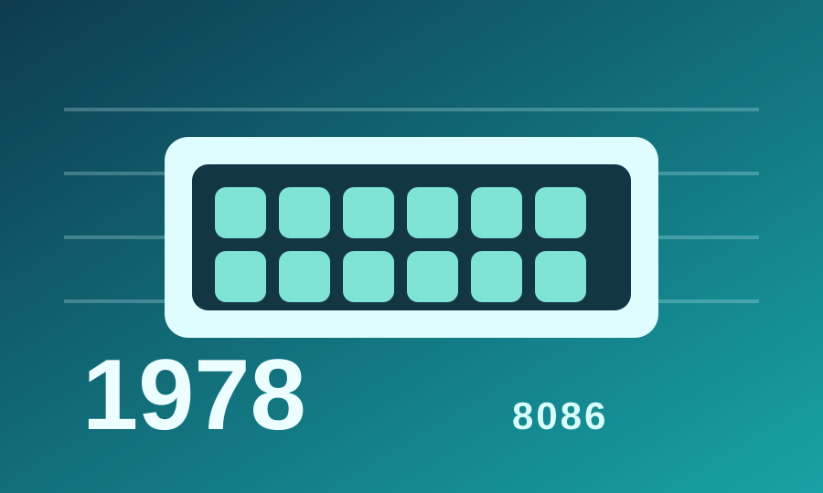
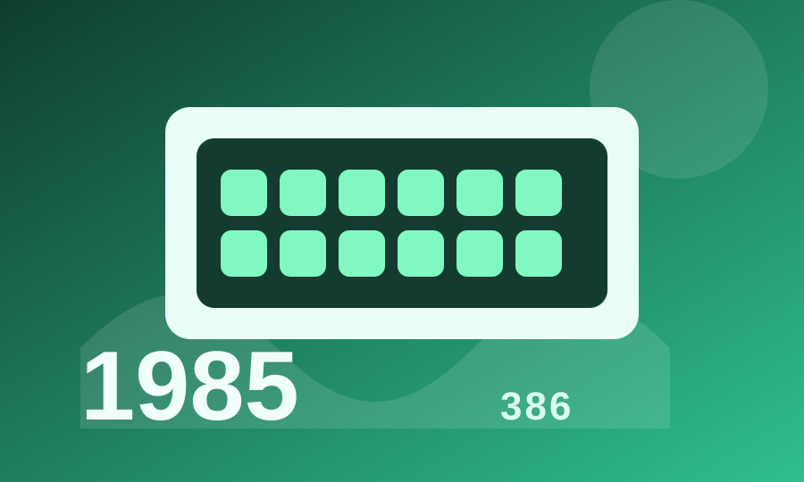

01
Innovation
Intel continues to develop efficient computing solutions that reduce energy use while improving performance across modern devices and data centers.
Explore Intel's journey through time, discovering how our commitment to innovation has shaped a more sustainable future for technology and our planet.
Intel continues to develop efficient computing solutions that reduce energy use while improving performance across modern devices and data centers.
By investing in renewable electricity, cleaner manufacturing, and science-based targets, Intel helps drive meaningful climate progress at scale.
Sustainability is strongest when it includes people, partners, and communities. Intel works to build a more responsible and inclusive technology ecosystem.

Robert Noyce and Gordon Moore rename the newly formed company NM Electronics to Intel Corporation, laying the foundation for decades of technological innovation.
This milestone marks the beginning of Intel as a company built on scientific research, innovation, and long-term impact.

Intel debuts the 4004, the world's first commercial microprocessor, igniting the microprocessor revolution and propelling the future of computing devices.
The 4004 set the stage for personal computing, embedded systems, and an entirely new era of digital innovation.

Launch of the 8086 processor, establishing the x86 architecture that drives countless PCs and servers in the modern era.
The x86 architecture became a long-term foundation for a wide range of devices, helping shape the computing world.

Intel introduces the 386 processor with 32-bit architecture, ushering in a new era of performance and multitasking for personal computers.
This processor improved processing power and broadened what computers could do for everyday users.
This year marks Intel's highest annual greenhouse gas emissions for operations. Over subsequent years, Intel invests heavily in chemical abatement, renewable energy, and energy-efficient manufacturing to reverse this trend.
This milestone reflects Intel's honest acknowledgment of environmental impact and the beginning of a major sustainability transformation.
Intel launches its RISE (Responsible, Inclusive, Sustainable, Enabling) strategy and 2030 goals, aiming to drive industry-wide progress on climate action, water stewardship, and waste reduction.
RISE helped define a clearer sustainability roadmap built around responsibility, inclusion, and long-term environmental goals.
Intel announces its commitment to achieve net-zero greenhouse gas emissions (Scope 1 and 2) across its global operations by 2040, building on years of environmental initiatives.
Net-zero commitments show how sustainability targets can align with industrial innovation and climate responsibility.
The company achieves 99% renewable electricity usage worldwide, helping to drastically lower carbon emissions and driving progress toward Intel's long-term sustainability goals.
This achievement reflects the importance of clean energy adoption in reducing manufacturing-related emissions.
Intel hosts its first Sustainability Summit, uniting suppliers, government officials, and industry leaders to collaborate on next-generation sustainable semiconductor manufacturing.
The summit highlights how sustainability depends on partnership across industry, government, and the broader supply chain.
Scroll to view timeline | Hover over cards to learn more!